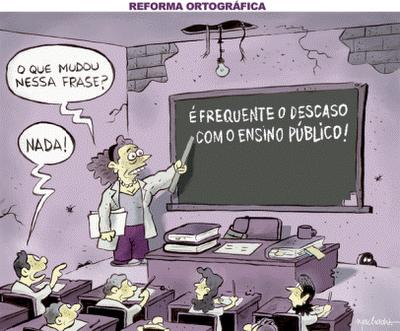
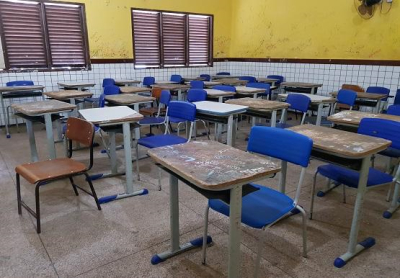

Investir em educação, é sinônimo de pensar no futuro do país, da sociedade e de si mesmo. Educação pública é aquela oferecida para todos os indivíduos pelo estado. No Brasil a educação pública não é tratada como investimento. O Brasil ocupa o 53º lugar em educação, entre 65 países avaliados (PISA). Mesmo com o programa social que incentivou a matrícula de 98% de crianças entre 6 e 12 anos, 731 mil crianças ainda estão fora da escola (IBGE). Para entendermos melhor essa situação vivenciada em nosso país, aqui vão algumas perguntas que muitos brasileiros fazem:

Por que a escola pública no Brasil sofre problemas financeiros ?
- Altas taxas de abandono de alunos; Carência de condições materiais; Currículos desinteressantes e desconectados da vida real; etc.
Por que a qualidade da educação no Brasil é tão ruim?
- Atualmente, o Brasil investe cerca de 6% do PIB no setor, ou seja, a falta de investimento nessa área é grande. Além disso, a constante descontinuidade das iniciativas educacionais, a superlotação das salas de aula, a deficiência na formação do professor, o descaso com a saúde do aluno e a do professor são alguns dos outros motivos.

Qual a situação da educação pública no Brasil?
-O Brasil ocupa o 53º lugar em educação, entre 65 países avaliados (PISA). Mesmo com o programa social que incentivou a matrícula de 98% de crianças entre 6 e 12 anos, 731 mil crianças ainda estão fora da escola (IBGE).